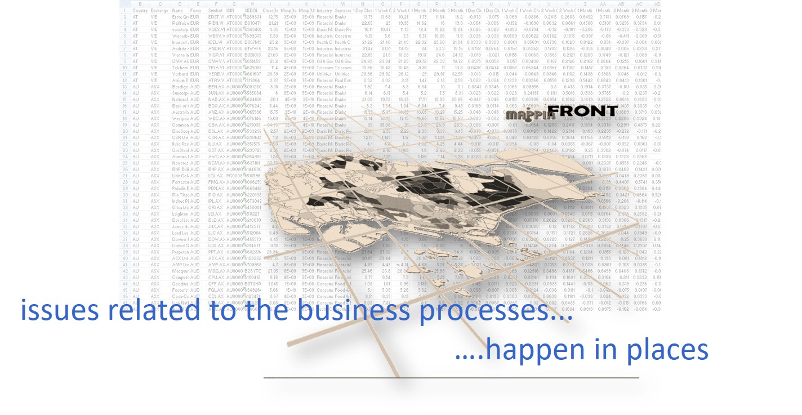

Lesson 1: Introduction to Geospatial Analytics and Applications
Content
- Demystifying Geospatial Analytics
- Motivation of Geospatial Analytics
- The Role of Geospatial Analytics
- Geospatial Analytics and Social Consciousness
Demystifying Geospatial Analytics
- A Geographical Information System (GIS) is a toolkit for creating, managing, analysing, visualising, and sharing data of any kind according to where it’s located.
Geospatial analytics is more than a GIS.
Demystifying Geospatial Analytics
- Geospatial analytics is more than data visualisation

Demystifying Geospatial Analytics
- Geospatial analytics is more than just mapping.
Motivation of Geospatial Analytics
- About 80% of all data maintained by organisations around the world has a location component.

(Source: BusinessWeek Research Services, 2006)
Motivation of Geospatial Analytics
- Geospatial information in Smart Nation.

See more at this link
Motivation of Geospatial Analytics
- The explosion in the availability of open geospatial data from both the public and private sectors at national and international levels.

Motivation of Geospatial Analytics
- The national geospatial master plan.

Source: Singapore Geospatial Master Plan
The role of Geospatial Analytics
- Uncovering insights not found in statistical graphs and tables.
The role of Geospatial Analytics
- To reveal the untapped property of spatial contiguity in geographic knowledge discovery in databases.

The role of Geospatial Analytics
- To uncover the complexity of the real world relationship.
The role of Geospatial Analytics
- To model spatial interactions and flows.

Source: IS415 Bus Rider Flow Project